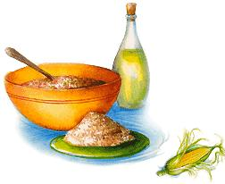

Lending an ear to late
summer corn.
After the Europeans began consuming large quantities of corn during the 18th century, many developed a niacin deficiency known as pellagra because corn is deficient in niacin and several amino acids. Native Americans never had this problem because they cooked corn with wood ash to release the niacin, or cooked corn with beans. Whereas 5,000 years ago an ear of corn was a puny two inches long, today's plump and juicy sweet corn is one of summer's finest pleasures. That joyous experience may only be diminished by knowing that more than 35% of all U.S. corn (both field corn and sweet corn) is genetically engineered and then further sprayed with pesticides. As with most fruits and vegetables, the best bet is to buy from local farmers or standowners after you have had an opportunity to quiz them about their growing practices. Better yet, buy organic seeds and grow your own corn. And when it's knee high by the fourth of July, you'll know that it's time to start melting lots of butter.
While trying to find ways to incorporate more soy into my diet, I discovered frozen sweet soybeans, which remind me of Lima beans, only sweeter. My husband likes them because they're higher in protein than other beans and they contain 50 milligrams of isoflavones per serving. I've been buying the "Hearty and Natural" brand at Whole Foods or at my local health food store. If you can't ''find them, use frozen Lima beans. This easy dish is great for lunch with some crusty bread.
1 (12-ounce) package frozen sweet soy beans (about 2 1/2 cups)
1 teaspoon olive oil
1 medium onion, chopped
2 large cloves garlic, peeled and thinly sliced
2 cups raw or cooked fresh corn (or defrosted frozen corn)
2 medium garden red or yellow tomatoes (We prefer our garden yellow tomatoes. )
Salt, cayenne pepper and freshly ground pepper
8-10 fresh basil leaves (or parsley if basil isn't available)
In a large, nonstick skillet, cook the soybeans according to the package directions until tender but not overcooked. (For the "Hearty and Natural" brand, simmer the beans in water for about 12 minutes.) Drain the beans, saving some of the water. Bring to a boil a small saucepan filled with water. Put the tomatoes in the pan and gently boil for about a minute or so to loosen the skin. Peel the tomatoes and chop into a half-inch dice. Heat the oil in the skillet, adding the onion and garlic. Saute until soft. Then add the corn and two tablespoons of bean water, adding more later if needed. Simmer until the corn is cooked, then add the beans and tomatoes. Cook just until the tomatoes have softened, adding salt, pepper and cayenne pepper to taste. Remove from heat. Using a scissors, snip thin strips of basil and stir into the ragout just before serving.
I've never been crazy about casseroles, but this is a good one for a hungry crowd. If your group doesn't like anything spicy, tone it down by using less hot pepper. This is a good brunch dish.
12 corn tortillas
1 teaspoon oil
1 small jalapeno pepper, seeded and minced
1 medium onion, chopped
1 red pepper, diced
1 poblano or green pepper,diced
2 cups raw, ,fresh corn (If usingfrozencorn, defrost and drain.
2 cups grated mild cheddar or a mild white cheese such as Chihuahua or Monterey Jack
3 eggs
2 cups lowfat buttermilk
1 teaspoon ground cumin
1/2 teaspoon salt
Preheat oven to 350°F. Tear the tortillas into one-inch pieces. In a large skillet, saute the hot pepper and onion until soft. Add the sweet peppers and corn and saute, stirring frequently, over medium heat until tender. In a food processor, or grating by hand, pulse oneinch chunks of cheese until crumbled and set aside. Then blend, or whisk by hand, the eggs, buttermilk, cumin and salt. Grease an 8 1/2" x 11" glass Pyrex pan or a shallow casserole of a similar size. Spread one-third of the tortillas in the bottom of the pan. Top with 1/3 of the veggie mixture and 1/3 of the cheese. Repeat the layers two more times. Pour the egg mixture evenly over the casserole. Bake about 40 minutes until lightly browned and an inserted knife in the middle of the casserole comes out clean. Don't overbake or it will be dry. Let sit 5-10 minutes before slicing into squares and serving.
Variations: Try adding some cooked, shredded chicken breast or use different vegetables. Instead of the sweet peppers, use diced zucchini or summer squash. I like to serve the casserole with a bowl of salsa verde on the side for drizzling.
Since we're no longer drinking milk at our house, I was looking for a nondairy chowder with a creamy texture. This simple chowder fits that description. Feel free to substitute the sweet pepper with any mild peppers that you have in your garden, such as a banana pepper.
2 teaspoons olive oil
1 large onion, chopped
1 large clove garlic, minced
1/2 of a hot pepper (jalapeno or serrano), seeded and minced
2 teaspoons ground cumin
2 cups low or nonfat chicken broth or vegetable broth
1 cup water
1 medium sweet potato, peeled and cut into a quarter-inch dice
1 small red pepper, cut into a quarter-inch dice
2 cups fresh or frozen corn
Salt to taste, , freshly ground pepper
Lime wedges
Chopped cilantro (optional)
In a soup pot, saute the onion, garlic and hot pepper until soft. Stir in the cumin and cook for about 30 seconds. Add the broth, water and sweet potato. Cover and simmer for 10 minutes until the sweet potato is soft. Add the red pepper and corn and simmer, covered, for about 10 minutes until the vegetables are done. Puree about half the soup in a blender and return to the pot. If the soup is too thick, add a little more water. Season to taste and serve with a lime wedge and a sprinkle of cilantro.
With sweet, roasted corn (see " Roasting Corn ," below) lending a rustic flavor, this colorful salsa is patio food, so serve it with chips or use it as a topping to spice up those grilled turkey burgers.
2 cups raw fresh corn
2 large garden tomatoes (about 2 cups), cut into a small dice
1 poblano pepper (or any not-too-hot garden pepper), diced
4 green onions, chopped
1 jalapeno (or the pepper of your choice), seeded and minced
2 garlic cloves, minced
1/2 cup chopped cilantro leaves
1/2 teaspoon salt
1 teaspoon sugar
Freshly ground pepper
2 tablespoons lime juice
Line a small cookie sheet with foil and grease it with a few drops of oil or cooking spray. Spread the corn kernels out evenly on the foil. Put under the broiler about four inches from the heat source and watch carefully. Stir every minute or so until the corn is lightly browned (about 4 minutes). Let cool while you prepare the salsa.
In a large bowl, toss together the rest of the ingredients. Taste to see if the salsa is hot enough; if not, add more hot pepper. Cover with plastic wrap and let sit at room temperature until time to serve. Note: If you make the salsa earlier in the day, don't add the salt until just before serving. Refrigeration changes the texture of fresh tomatoes, so if you're only serving a few people, you may want to cut the recipe in half so there aren't any leftovers.
Roasting corn gives it a chewy texture and interesting flavor. Roasting also caramelizes the corn's sugars, making it sweeter. After roasting. cut the corn off the cob and use it in salads or salsas. This is a good way to get rid of the "old'' corn that you found in your refrigerator that's five days old. Here are some different ways to roast your summer corn.
• Roast the ears over an open wood fire or p/ace them on the grill. First, pull back the husks, remove the silk, and use the husks as a handle. Turn frequently until lightly browned.
• On or off the cob: On a foil-lined baking sheet sprayed with oil. roast in a 400°F oven until the kernels are lightly browned turning or stirring them once.
• On or off the cob: On an oiled, foil-lined baking sheet broil at least four inches from the heat source, turning or stirring the corn so it browns evenly. Watch carefully so the corn doesn't burn.
1 teaspoon olive oil
1 cup quinoa*, rinsed well in cold water and drained ,
1 cup water
1 teaspoon ground cumin
1/2 teaspoon salt
1 cup fresh, cooked corn
2 medium tomatoes, diced
1 red pepper, diced
4 green onions
1/2 cup chopped cilantro leaves cup
1/4 chopped parsley
1 (15-ounce) can block beans, rinsed and drained
1/4 cup lime juice
2-3 tablespoons extra virgin olive oil
Freshly ground pepper
A dash of hot sauce or cayenne pepper
Mixed salad greens (optional)
In a large, covered nonstick skillet, heat the oil over medium heat. Add the quinoa and stir a few minutes until toasted. Stir in water, cumin and salt and heat to near boil ing. Reduce heat to low, cover, and simmer until liquid is absorbed (about 15 minutes). Remove from heat and let stand for 5 minutes. Fluff quinoa with a fork and set aside to cool.
In a large bowl, whisk the dressing, then toss in the rest of the ingredients. Let the quinoa cool thoroughly before adding it to the salad. Taste for additional seasoning. Serve on top of some garden salad greens. Note: If you're making the salad ahead of time, toss in the tomatoes just before serving since they don't refrigerate well.
*Quinoa: This ancient, quick-cooking grain has more protein than any other grain, including lysine, an amino acid seldom found in grains. This makes it great for vegetarians. The plant has a natural coating that acts as an insect repel lent, so rinse well under cold water before cooking to remove any bitterness.
Read more inside MOTHER'S KITCHEN www.motherearthnews.com
Freezing your own garden corn or farm stand corn is worth the effort because it's fresher and healthier than frozen store-bough t corn. It's also much cheaper than frozen organic corn from the health food store. Your own freezer corn can be pesticide-free and not genetically modified. so it's safer for your family. When I return from the farmers' market early on Saturday morning, I get started on my corn freezing before it gets too hot outside. I buy at least two or three dozen ears to make this project worthwhile. (Also, it's cheaper to buy in larger quantities.) Draft a few family members to husk the corn. instructing them to remove as much silk as possible.
• I only freeze corn off the cob in Ziploc freezer bags. Some people freeze it on the cob, but I don't like the texture of frozen cob corn and the cobs take up too much room in the freezer. If you have a vegetable steamer put it in a large, covered pot with two inches of water, or if you don't have a steamer, fill the pot half full with wa ter and bring to a boil. (you can use two pots to save time.) Put in the corn: cover and reduce heat.
• Simmer on medium heat just until the corn is tender.
Don't overcook: the corn will continue to cook as it cools. Place the corn on the counter to cool slightly and start cooking another batch of corn. Over a large cuffing board. cut the corn off the cobs and put it in a large bowl to cool. Make sure to cut the corn off the cobs shortly after removing the ears from the pot or the kernels will dry out on the cob. Keep checking the water in the pot. adding more when necessary. When all the corn kernels are in the bowl, place the bowl in the refrigerator to rapidly cool down the corn. If the corn isn't thoroughly cooled before packing it will cool down in the freezer, causing condensation and then ice crystals which can prematurely age frozen food.
• Label one-quart and pint-size Ziploc freezer bags with a permanent marker (ex. Farmer's Market Corn. Aug. 00). I alternate colored markers each year so I can spot a "Corn 99" bag easily in the freezer and use it up. Spoon the cooled corn into the freezer bags until the bags are three-quarters full. Flatten the bags by pressing out the air, seal, and lay flat in the deep freeze. Once they're frozen, you can stand them up and store them conveniently in your freezer. ft's best to use them up within one year in a zero-degree deep freeze. The corn won't keep as long in a refrigerator freezer.
To use: Add frozen or defrosted to soups. etc. towards the end of the cooking time since the corn is already cooked.
|
|
|
|
|
|
 |
|